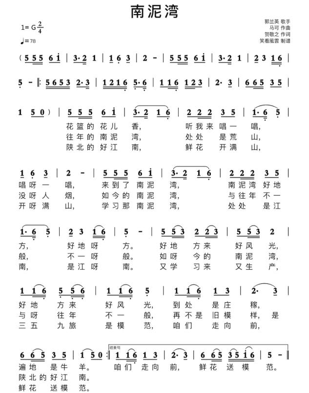
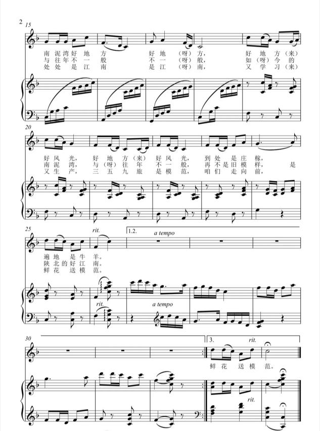

创作背景
《南泥湾》创作于1943年，贺敬之作词，马可作曲，是延安鲁迅艺术学院秧歌舞《挑篮》的插曲。1943年新春佳节，鲁艺秧歌队需要编排一组节目慰问陕甘宁边区“生产模范”第三五九旅全体官兵。19岁的贺敬之被三五九旅官兵开展大生产运动的热情所感动，接到任务的当天便写出了歌词，随后由作曲家马可采用陕北民歌调式谱曲。
抗日战争进入相持阶段后，国民党对陕甘宁边区实施军事包围与经济封锁，边区物资供给极度困难。三五九旅进驻南泥湾，开荒垦地、修建窑洞、兴修水利，将昔日荒凉的“烂泥湾”改造为良田连片、物产丰饶的“陕北好江南”。
音乐艺术特征
节拍为2/4拍，五声徵调式，属陕北秧歌舞曲体裁，整体调性明亮稳定。乐曲采用对比单二部曲式（A+B）：A段旋律平缓流畅，叙事性强；B段旋律音区抬高，节奏顿挫感增强，情绪热情昂扬。尾声采用五度上行的甩腔手法结束全曲，结构完整，歌舞律动性极强。
教学目标
知识目标：了解南泥湾大生产运动历史，掌握秧歌舞曲体裁特点，识别五声徵调式的听觉色彩。
技能目标：能够连贯演唱歌曲，把握陕北民歌装饰音与滑音韵味，做到声断气不断。
情感目标：感悟自力更生、艰苦奋斗的延安精神，理解劳动创造美好生活的内涵。
演唱处理
气息轻柔连贯，音色甜美干净。A段抒情柔和，侧重营造田园意境；B段逐步提升音量，情绪上扬，表达赞美与自豪。演唱装饰音自然适度，不夸张，贴合秧歌舞质朴欢快的气质。
教学拓展
结合历史图片、开荒影像资料，对比南泥湾过去与现在的面貌；简单介绍秧歌舞这种延安时期群众文艺形式，理解文艺为人民服务的思想。
教学图片




